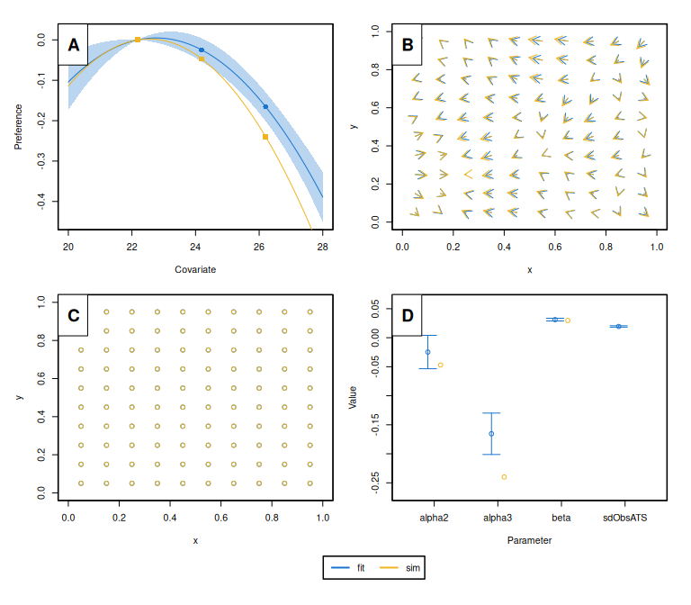

momo is a new R package for tagging-based movement modeling, specifically designed to estimate fine-scale animal movement patterns using various tagging data, such as mark-recapture, mark-resight, and data-logging/archival tags. The movement model is based on the advection-diffusion equation and incorporates habitat preference functions, enabling the reconstruction of individual movement paths and inference of population-level movement dynamics using a small set of interpretable parameters. Movement rates are estimated as a function of environmental conditions or geographic locations.
Installation
The current version of momo (v0.0.1) requires R \(>= 4.0.0\) and can be downloaded from github as follows.
# install.packages("remotes")
remotes::install_github("tokami/momo")The development version can be installed with:
remotes::install_github("tokami/momo", ref = "dev")Usage
To get started with momo, load the package, simulate a tagging dataset, and fit the movement model:
#> Tags recaptured outside of spatial domain: 7. Removing them.
#> Building the model, that can take a few minutes.
#> Model built (0.61min). Minimizing neg. loglik.
#> 0: 3126.1948: 0.00000 0.00000 -4.60517 -4.60517
#> 1: 2880.1589: -0.558789 0.577044 -4.27519 -4.10930
#> 2: 2618.9609: -0.625390 0.471434 -4.27516 -4.10927
#> 3: 2064.9634: -0.576960 0.432040 -4.27515 -4.10926
#> 4: 1966.6060: -0.559572 0.453352 -4.26687 -4.09705
#> 5: 1819.3146: -0.524745 0.496032 -4.25039 -4.07273
#> 6: 1283.7152: -0.515850 0.436595 -4.23816 -4.06108
#> 7: -1578.3020: -0.507600 0.454835 -3.75490 -3.51066
#> 8: -2013.7970: -0.495985 0.449953 -3.15968 -3.93782
#> 9: -3269.3220: 0.0366531 0.0814680 -2.90563 -3.70788
#> 10: -3437.7812: -0.151759 -0.0223050 -3.12028 -3.04112
#> 11: -3443.7330: -0.155842 0.109359 -3.02305 -3.36122
#> 12: -3505.2133: -0.0683853 0.0588707 -3.11816 -3.28948
#> 13: -3509.0225: -0.0850029 0.0348561 -3.12076 -3.28721
#> 14: -3518.0928: -0.0782876 0.0348028 -3.20456 -3.20494
#> 15: -3518.9923: -0.0980111 0.0527490 -3.27579 -3.18876
#> 16: -3524.0503: -0.0859280 0.0446435 -3.29575 -3.19551
#> 17: -3524.2979: -0.0848467 0.0371043 -3.30097 -3.19808
#> 18: -3524.9931: -0.0810695 0.0366657 -3.31897 -3.20348
#> 19: -3526.3258: -0.0845161 0.0419698 -3.37989 -3.21891
#> 20: -3526.3261: -0.0828945 0.0422953 -3.37670 -3.21630
#> 21: -3526.4819: -0.0830186 0.0416537 -3.37475 -3.21547
#> 22: -3526.5545: -0.0826753 0.0415480 -3.36648 -3.21222
#> 23: -3526.5652: -0.0832213 0.0416464 -3.36111 -3.21117
#> 24: -3526.5671: -0.0831026 0.0416748 -3.36128 -3.21122
#> 25: -3526.5671: -0.0831466 0.0417000 -3.36149 -3.21123
#> 26: -3526.5671: -0.0831708 0.0417120 -3.36148 -3.21124
#> 27: -3526.5671: -0.0831719 0.0417124 -3.36147 -3.21124
#> Minimization done (0.016min). Model converged. Estimating uncertainty.
This example illustrates the basic workflow: prepare data (here simulate), fit the model, and access results. For real applications, momo supports multiple types of tagging data, customizable environmental covariates, and both estimation and prediction features.
Detailed examples and guidance are provided in the package vignettes (see https://tokami.github.io/momo/).
Getting help
You can find more information about momo on its pkgdown page at https://tokami.github.io/momo/. The page includes links to vignettes, functions descriptions, version updates, and many more. In case, your question is not answered on the pkgdown webpage, please write an email to the maintainer: Tobias Mildenberger. In case you find bugs, please post an issue on here.